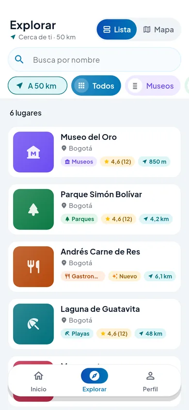
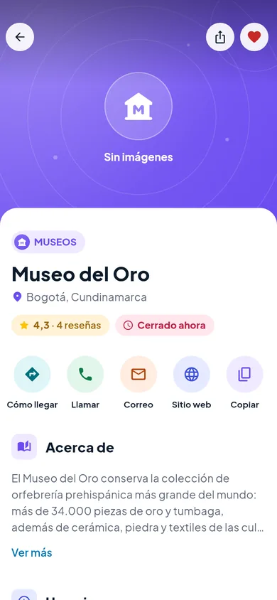

Apps móviles
Aplicaciones para Android e iOS con Flutter, listas para publicar en Google Play y App Store.
- Diseño de interfaz y experiencia de uso
- Mapas, notificaciones y compras dentro de la app
- Publicación y actualizaciones en las tiendas
Desarrollo de software · Calidad · QA
En Essential Coder diseñamos, desarrollamos y mantenemos apps móviles, plataformas web y APIs. Cada entrega pasa por pruebas automatizadas antes de llegar a tus usuarios.

Servicios
Nos ocupamos del producto completo: diseño, código, pruebas, publicación y mantenimiento. Un solo equipo, sin piezas sueltas.
Aplicaciones para Android e iOS con Flutter, listas para publicar en Google Play y App Store.
Sitios rápidos y paneles de administración con React y TypeScript, pensados para crecer.
APIs seguras y escalables con Node.js y PostgreSQL, documentadas para que cualquier equipo las use.
Pruebas automatizadas, revisión de código e integración continua. La calidad no se deja para el final.
Proceso
Entregas cortas y visibles. Sabes en todo momento qué está hecho, qué sigue y cómo se comprobó.
01
Entendemos el problema, a tus usuarios y tus objetivos, y definimos juntos el alcance.
02
Prototipos y arquitectura antes de escribir código, para validar pronto y sin sorpresas.
03
Cada cambio llega con sus pruebas automatizadas y pasa por revisión antes de integrarse.
04
Publicamos en tiendas y servidores, vigilamos que todo funcione y seguimos mejorando.
Caso de estudio
Descubre lo mejor de cada ciudad
Una plataforma de turismo para descubrir lugares cercanos, guardar favoritos y leer reseñas reales. Los negocios locales publican su ficha y llegan a más visitantes.

Por qué Essential Coder
Cada cambio pasa por pruebas automatizadas antes de llegar a producción. No lo prometemos: lo comprobamos.
Sesiones seguras, datos cifrados y permisos mínimos desde la primera línea, no como parche.
Arquitectura clara y documentada, para que tu producto crezca sin tener que rehacerlo.
Hablas con quien construye tu producto y ves avances reales en cada entrega.
Cuéntanos qué necesitas: una app, una plataforma web o una API. Te respondemos con los siguientes pasos.
soporte@cityscout.app